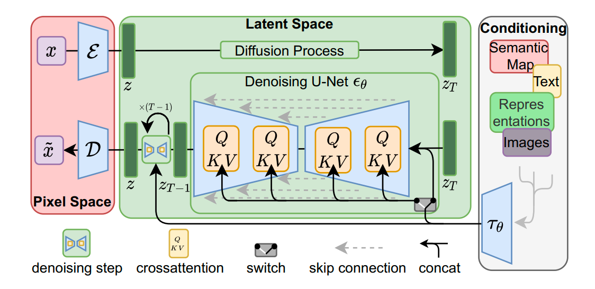

潜变量扩散模型（LDM）与Stable Diffusion基本原理
潜变量扩散模型（LDM，Stable Diffusion） 基本原理
论文链接：High-Resolution Image Synthesis with Latent Diffusion Models

基本概要
LDM要解决的问题：直接在像素空间进行扩散生成效率太低，消耗资源过大，严重制约了模型推广到大尺寸图像的生成中，基于这样一个观察，即：对于一般图像来说，只有少部分的bit就足以表达其语义信息，而更多的bit则是用来提升感知效果（perceptual）的。如果我们将耗时的扩散过程只放到语义的特征上，那么就可以用少量的计算完成生成过程，然后再通过解码器补充细节。基于上述思路，LDM提出从隐空间（latent space）来进行生产，这里的隐空间简单理解就是经过某种编码压缩后的特征空间。再小尺寸特征图上实现扩散和去噪的过程，从而提高效率。
LDM的特点
- 隐空间进行扩散而不是对像素域直接操作（前面以及讲过）
- 通过attention操作将控制信息（比如文本、semantic map等）融合进来，实现可控的生成
- LDM实际上也是个两阶段模型，其中编解码器就是VQGAN，而隐空间则用diffusion方式进行处理
整体流程
- 训练阶段
- 训练一个VQGAN，获取pretrained VQGAN的encoder和decoder用于转移图像到隐空间。
- 隐空间进行扩散模型训练，即加噪和去噪过程。扩散模型的estimator用的是U-net，其中为了利用condition信息，将U-net的中间层加入cross attention操作，具体实现为：将文本等信息通过
（比如通过CLIP）编码成为特征向量，然后过一个FNN，得到K和V，而Q则由图像特征经过FFN得到。 - 训练过程的loss函数包括扩散模型通用的误差
预测函数的拟合误差，以及约束encoder得到的latent方差的正则化项（这里采用了VQ-reg或KL-reg，VQ就是VQGAN中codebook离散化的正则，而KL是类似VAE的分布约束的正则）
- 生成阶段
- 从隐层的随机采样的
开始，利用attention U-net逐步反向去噪生成，每次迭代都通过condition特征的attention控制，得到结果后经过VQGAN的decoder，用于生成最终结果。
- 从隐层的随机采样的
Stable Diffusion（SD）是由Stability和Runaway开源的一个LDM的实现，主要用于文生图（T2I）任务。项目链接：https://github.com/CompVis/stable-diffusion。同时也集成到了diffusers库中。下面是通过diffusers使用SD模型的代码片段：
1 | # make sure you're logged in with `huggingface-cli login` |